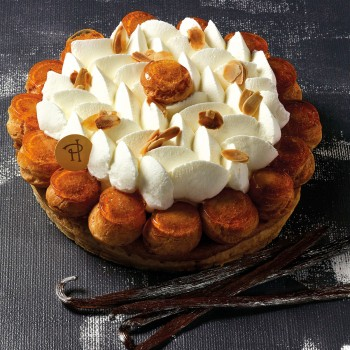
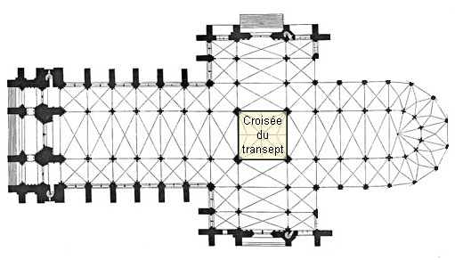
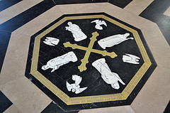
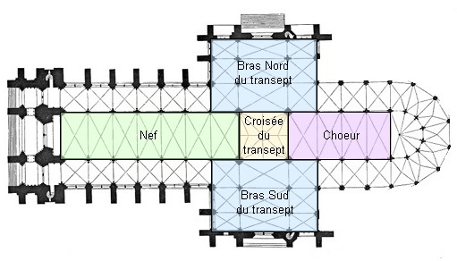
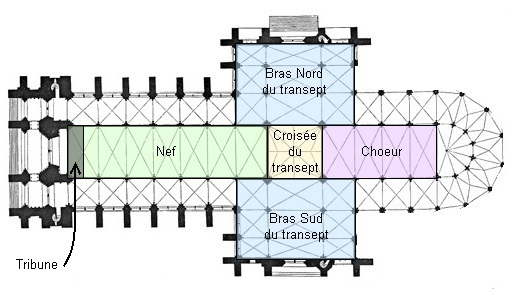
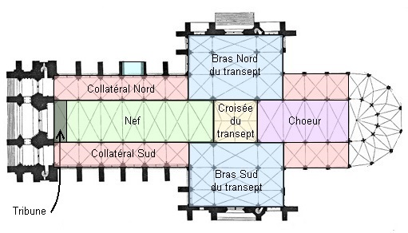

Mais qui est qui?
Mène l'enquête au Moyen-Âge...
Sauras-tu retrouver quel est le personnage que la statue de la Vierge Dorée a remplacé ?
Commencer l'aventure !
Mène l'enquête au Moyen-Âge...
Sauras-tu retrouver quel est le personnage que la statue de la Vierge Dorée a remplacé ?


Pour trouver l'énigme 1, longe la nef jusqu'au centre de la cathédrale. Tu dois trouver la cathèdre qui se situe devant le grille de coeur.
La cathèdre est le siège où l'évêque préside les cérémonies.
Bravo tu as trouvé l'énigme 1
Pour résoudre cette énigme, replace les lettres dans l'ordre pour reconstituer le premier indice
Si la case devient verte, c'est que la lettre est à la bonne place.
A toi de jouer !
Dirige-toi vers le NORD ...
Recherche des anges surmontant une porte, revers d'un portail.
Recherche le labyrinthe.
Situé dans la nef, ce labyrinthe dont le parcours mesure 234 mètres, représente un octogone. Il est constitué d'un pavage de pierres blanches et bleu foncé.
Bravo, tu as trouvé l'énigme 4 !
Pour résoudre cette énigme, replace les 3 architectes de la cathédrale dans l'ordre chronologique.
Il te restera ensuite à placer l'évêque qui a commandé la cathédrale en quatrième position.
Rends-toi au devant de la clôture de coeur, qui ferme l'espace sacré, pas très loin de la cathèdre.
Rends-toi près d'un pilier, d'où tu peux voir la tribune des grandes orgues, située à l'arrière de la façade occidentale.
Dirige-toi dans les bas côtés de la Cathédrale, qui se situent de part et d'autre de la nef.
Il te faut trouver le bas-côté Nord.
L'indice se trouve près de la chapelle qui porte le nom de notre personnage mystère.
À toi de retrouver le personnage mystère. Aide-toi des indices trouvés.
Mais attention tu n'as le droit qu'à 3 chances !
Si tu échoues, tu perdras tes 5 clés
Clique sur une lettre pour savoir si elle se trouve dans le mot.
Connais-tu cette pâtisserie ?
Bienvenue !!
Je suis la pour
t'aider pendant ta visite.

Pour avancer dans la visite veuillez suivre les indications mentioner à l'écran
Il te faut trouver 7 indices.
Un indice est obtenu à chaque fois que tu résous une éniqme.
A toi de trouver ces énigmes, symbolisées par des piéces jaunes pausés sur le pavement de la Cathédrale. Déplace toi dans la cathédrale pour les découvrire.
Bonne chasse.
Tu as trouvé l'indice 1. C'est le mot évêque. Tu as gagné 1 CLEF.
La personne que nous recherchons est un évêque !
Tu as découvert le centre de la Cathédrale qui s'appelle la croisée du transept. Elle sépare la nef du choeur
Maintenant dirige-toi vers le Nord
Tu as trouvé la première partie de l'indice 2. C'est le chiffre 3.
Pour trouver la seconde partie de l'indice, tu dois te rendre à l'opposé du Nord.
Tu as trouvé la seconde partie de l'indice 2. C'est aussi le chiffre 3. La somme des 2 parties d'indice constitue l'indice 2.
Tu as maintenant deux indices : Evêque et le chiffre 6.
Tu gagnes aussi une 2ème CLEF.
Tu as découvert les bras Nord et Sud du transept.

Tu as trouvé le 3e indice qui est le mot pain.
Tu as maintenant : Evêque, 6 et pain.
Tu gagnes une nouvelle CLEF.
Tu as également découvert l'histoire du labyrinthe.
Sa pierre centrale, dont l'original est conservé au Musée de Picardie, indique les points cardinaux.
Tu connais maintenant la nef de la cathédrale

Tu as trouvé le 4e indice qui est boulanger.
Tu as maintenant : Evêque, 6, pain et boulanger.
Tu gagnes encore 1 CLEF.
Tu as su retrouver la croisée du transept et la cloture qui délimite le choeur de la cathédrale.
Le choeur est habituellement en 1er construit dans une cathédrale, mais à Amiens les architectes ont fait le choix de commencer par la nef.
Tu as trouvé le 5e indice qui est saint.
Tu as maintenant : Evêque, 6, pain, boulanger et saint.
Tu as maintenant 5 CLEFS.
Tu as également trouvé la tribune d'orgue.
Tu as trouvé la chapelle et le bas-côté Nord.
Généralement, les bas-côtés ouvrent sur les chapelles.
À Amiens, il en existe 11.
Tu as trouvé le personnage mystère.
Il s'agit du 6ème évêque d'Amiens, vers l'an 600, Saint Honoré.
Il est devenu le St Patron des Boulangers, fêté le 16 mai, le jour de la fête du pain.
Il a donné son nom à la célèbre patisserie : le saint Honoré.
Il est représenté en tenue d'évêque portant un pain dans la main.

La corporation des boulangers lui a dédié la chapelle devant laquelle tu te trouves.
Tu n'as pas réussi à trouver le nom du personnage mystère.
Tu viens de perdre toutes tes clefs, tu ne pourras donc pas accéder au secret ultime.
Mais il reste une dernière chance pour tenter de trouver le personnage mystère.